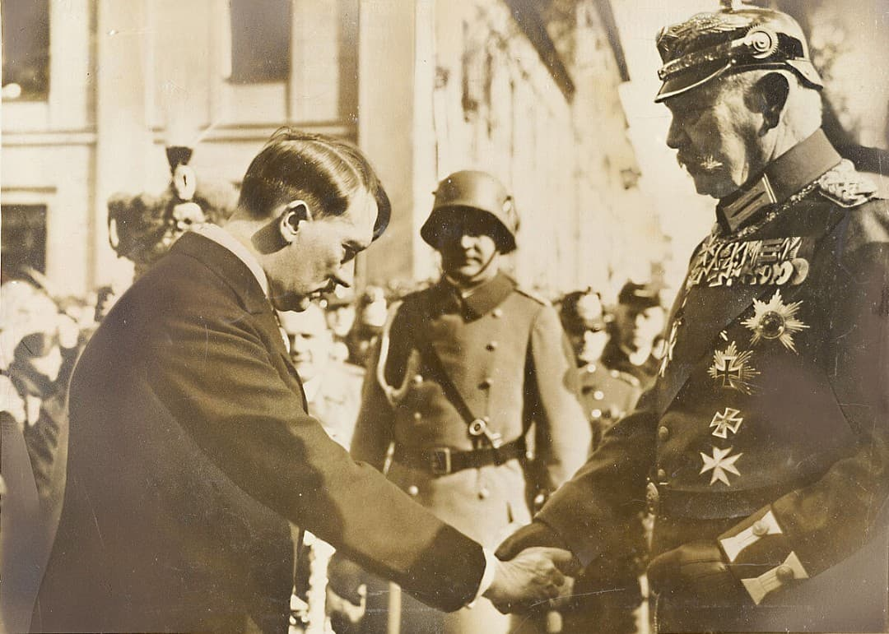
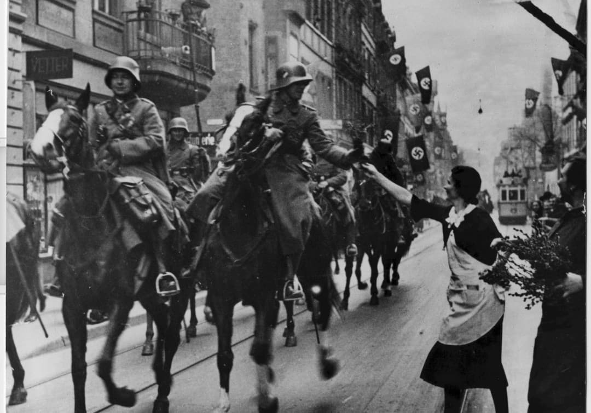
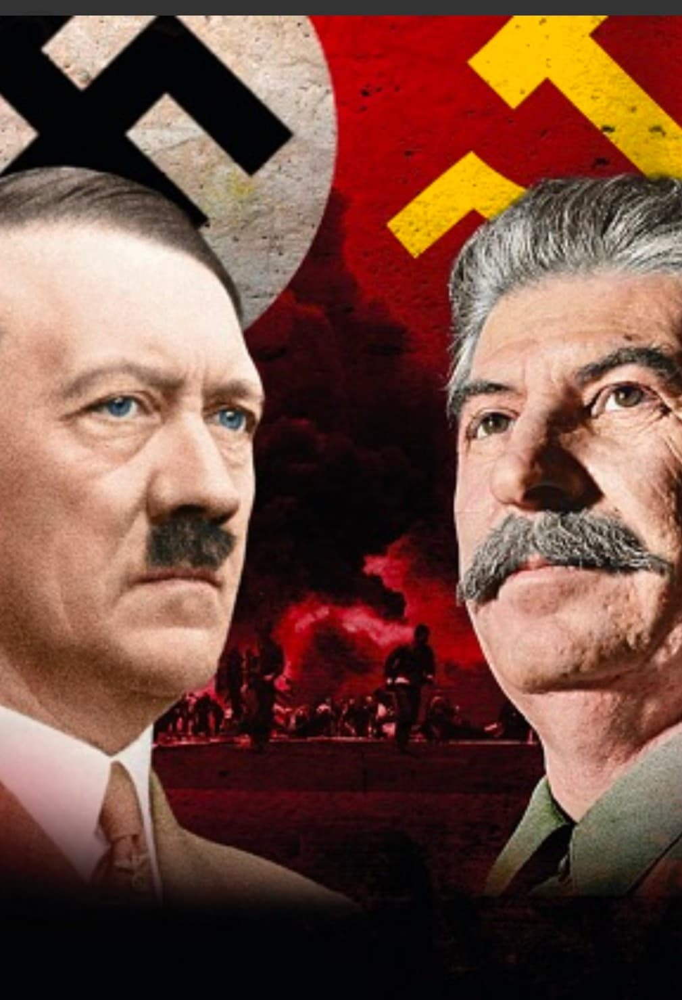
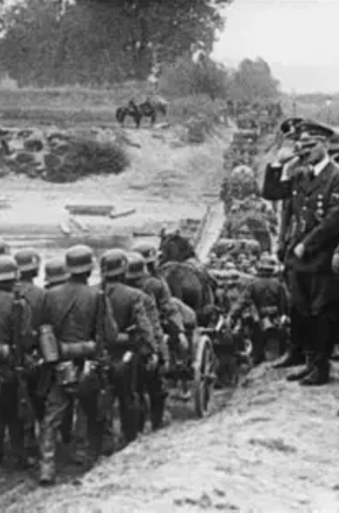
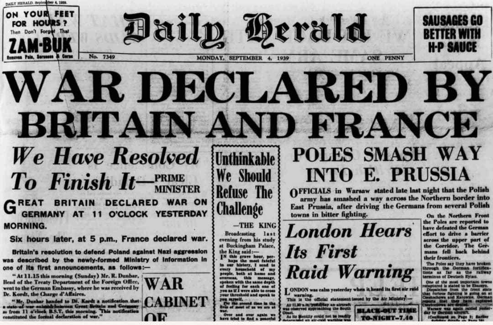

1. Après 1918 : une paix fragile

La Première Guerre mondiale laisse l’Europe épuisée. Le traité de Versailles impose à l’Allemagne des réparations lourdes, une réduction drastique de son armée et la perte de territoires.
La Seconde Guerre mondiale ne commence pas brutalement en 1939. Elle est le résultat d’une série de crises, de choix politiques et de renoncements qui, en quelques années, font basculer l’Europe dans le conflit le plus meurtrier de l’Histoire.
La Première Guerre mondiale laisse l’Europe épuisée. Le traité de Versailles impose à l’Allemagne des réparations lourdes, une réduction drastique de son armée et la perte de territoires.

En 1933, Hitler devient chancelier. Très vite, il installe une dictature : suppression des libertés, élimination des opposants, mise en place d’une propagande massive et d’un État policier.


Le 23 août 1939, l’Allemagne nazie et l’URSS signent un pacte de non-agression, connu sous le nom de pacte Molotov–Ribbentrop. Un protocole secret prévoit le partage de la Pologne et des zones d’influence en Europe de l’Est.
Cette image est une représentation symbolique. Hitler et Staline ne se sont jamais rencontrés en personne. La signature du pacte a été réalisée à Moscou par Joachim von Ribbentrop (Allemagne) et Viatcheslav Molotov (URSS), en présence de Staline.

Le 1er septembre 1939, l’Allemagne envahit la Pologne. C’est le début de la “Blitzkrieg” : une guerre éclair fondée sur la vitesse, la coordination des chars, de l’infanterie et de l’aviation.

Le 3 septembre 1939, après l’ultimatum resté sans réponse, la France et le Royaume-Uni déclarent la guerre à l’Allemagne.
Page du Musée HOP WW2 – Section Mur de Berlin & Guerre froide